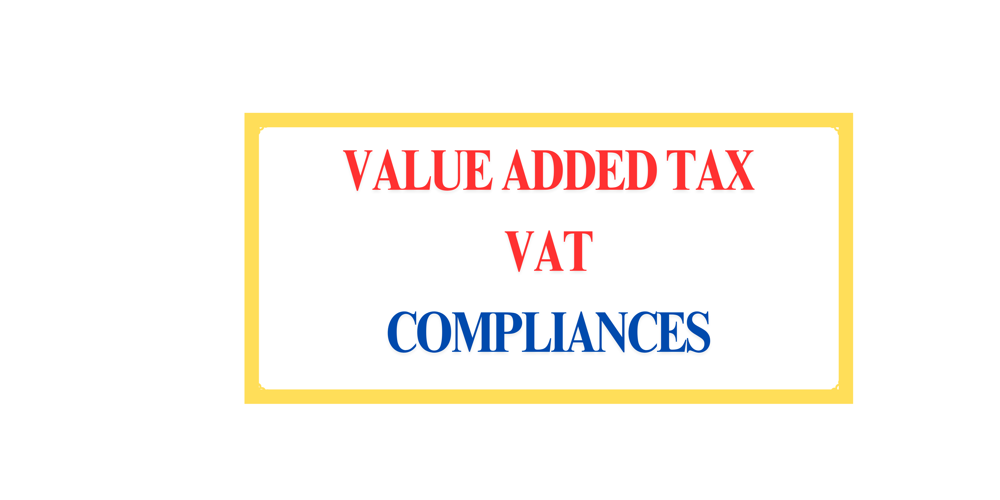

VAT Compliance in Nepal
Table of Contents
- The Basics of Value Added Tax (VAT)
- Rate of Value Added Tax (VAT) in Nepal
- VAT Exemptions and Zero-Rated Transactions
- VAT on Import
- VAT Regulation and Registration
- VAT Registration Process in Nepal
- Compliance Requirements for VAT Registered Entities
- How to File VAT Return in Nepal
- VAT Adjustment Process
The Basics of Value Added Tax (VAT)
VAT, or Value Added Tax, is a tax applied at each stage of the supply chain in Nepal, from manufacturing to final sale to the consumer. This means that VAT is added each time a product or service is sold until it reaches the end consumer, who is responsible for paying the final amount. In Nepal, VAT is governed by the VAT Act, 2052.
[Insert Screenshot or Image of VAT Act Here]
Rate of Value Added Tax (VAT) in Nepal
In Nepal, the VAT rate for applicable goods and services is set at a single rate of 13%. This is calculated as 13% of the net selling price and is added to the customer’s invoice.
VAT Exemptions and Zero-Rated Transactions
1. VAT Exempt Goods & Services
Goods and services listed in Schedule 1 of the VAT Act are exempt from VAT, covering essentials like agricultural products, medicines, education services, and basic transport services. Businesses that solely trade in these goods or services are exempt from VAT registration.
2. Zero-Rated Transactions
Schedule 2 of the Act lists zero-rated transactions, such as exports, which are taxed at a 0% rate. This ensures that exported goods remain competitively priced.
| Goods & Services | VAT Rate |
|---|---|
| Items in Schedule 1 | No VAT |
| Items in Schedule 2 (Exports) | 0% |
| All Other Items | 13% |
VAT on Import
Besides customs duty, VAT also applies to imports of goods not covered in Schedule 1 or 2. Imported goods that match domestic VAT-liable items must also bear VAT.
VAT Regulation and Registration
Businesses meeting the following criteria must register for VAT:
| Nature of Business | Criteria |
|---|---|
| Physical Goods | Annual Turnover > NPR 5 million |
| Services | Annual Turnover > NPR 3 million |
| Both Goods and Services | Annual Turnover > NPR 3 million |
[Insert Image of Registration Process Here]
VAT Registration Process in Nepal
In Nepal, a business entity can register for VAT immediately after its establishment or later, once it meets the VAT applicability criteria based on annual turnover. The process for VAT registration involves several steps, as outlined below.
Steps to Register for VAT
- Filling Out the Online VAT Registration Form
Visit the official IRD website and fill out the online VAT registration form. The form will require you to provide important business details, such as:
- Business Registration Number
- Date of Business Registration
- Registered Business Address
- Director or Proprietor’s Personal Information (e.g., name, PAN, contact details)
- Estimated Annual Turnover
[Insert Screenshot of Online Registration Form Here]
- Submission of Documents to IRD Office
After submitting the online form, you will receive a submission number. This submission number is essential, as you will need it when visiting the IRD office. Gather the following documents and submit them in person at the IRD:
- Printed Online VAT Registration Application with Submission Number
- Photocopy of the Business Registration Certificate and relevant documents
- Address Proof (e.g., Rent Agreement or Lalpurja for owned property)
- PAN (Permanent Account Number) of all shareholders involved in the business
Note that one of the directors or the proprietor must visit the IRD in person with these documents to complete the process.
[Insert Image of Required Documents Here]
- Verification and Biometric Process
Once the documents are submitted, an IRD officer will verify the information provided. During this process, the officer will confirm the business details and verify the identity of the director or proprietor present.
The IRD officer will then proceed with a biometric process, capturing the director or proprietor’s biometric information as part of the registration process. This is a mandatory step to confirm the physical presence of the applicant.
[Insert Image Placeholder for Biometric Process Here]
- Issuance of VAT Registration Certificate
After verification and successful completion of the biometric step, the IRD will issue the VAT Registration Certificate. This certificate is typically printed and handed over to the business owner on the same day.
The VAT registration certificate confirms that the business is now registered under VAT, allowing it to levy VAT on sales and comply with VAT regulations. The VAT number is the same as the PAN number of the business.
[Insert Image of VAT Registration Certificate Here]
This VAT registration process ensures that all necessary compliance measures are in place before the business begins collecting VAT from customers. It is also important to note that all shareholders must have their PAN to complete the VAT registration process successfully.
Compliance Requirements for VAT Registered Entities
A. Levy VAT on Sales and Payment to Government
VAT-registered businesses must levy VAT on every sale of VAT-liable goods and services, calculate monthly VAT liability, file a VAT return, and make payment to the government by the 25th of the following month.
B. Invoice Compliance Requirements
Businesses registered under VAT must follow these specific invoice requirements:
- The seller's VAT number must be mentioned on each invoice.
- Invoices should be issued in chronological order, starting from Invoice No. 01.
- Invoice numbers must be sequential, with no gaps or skipped numbers.
- Invoices cannot be backdated or issued with future dates.
- The VAT rate and amount must be clearly displayed on each invoice.
Comparison of Invoice Formats
The table below shows a comparison between the standard VAT invoice and the abbreviated VAT invoice, along with sample formats for each type.
| Feature | Standard VAT Invoice | Abbreviated Invoice | |||||||||||||||||||||||||||||||||||||||||||||||||||||||||||||||||||||||||||||||||
|---|---|---|---|---|---|---|---|---|---|---|---|---|---|---|---|---|---|---|---|---|---|---|---|---|---|---|---|---|---|---|---|---|---|---|---|---|---|---|---|---|---|---|---|---|---|---|---|---|---|---|---|---|---|---|---|---|---|---|---|---|---|---|---|---|---|---|---|---|---|---|---|---|---|---|---|---|---|---|---|---|---|---|---|
| VAT Amount Displayed | Shown separately in the invoice | Included in the final price, not shown separately | |||||||||||||||||||||||||||||||||||||||||||||||||||||||||||||||||||||||||||||||||
| Applicable Businesses | All VAT-registered businesses | Businesses with high retail traffic, e.g., supermarkets, restaurants | |||||||||||||||||||||||||||||||||||||||||||||||||||||||||||||||||||||||||||||||||
| Approval Requirement | Not required | Approval from the revenue department required | |||||||||||||||||||||||||||||||||||||||||||||||||||||||||||||||||||||||||||||||||
| Customer Request for Full VAT Invoice | Not applicable | A standard VAT invoice must be issued if requested by the customer | |||||||||||||||||||||||||||||||||||||||||||||||||||||||||||||||||||||||||||||||||
| Invoice Sample | |||||||||||||||||||||||||||||||||||||||||||||||||||||||||||||||||||||||||||||||||||
| Invoice Format |
|
|
|||||||||||||||||||||||||||||||||||||||||||||||||||||||||||||||||||||||||||||||||
For businesses with high retail customer volume, such as supermarkets and restaurants, it may not be feasible to issue a full VAT invoice for each transaction. These businesses can seek approval from the revenue department to use an abbreviated VAT invoice format, which shows VAT-inclusive prices. However, if a customer requests a full VAT invoice, the business must provide it.
C. Maintaining Kharid Khata and Bikri Khata
- Kharid Khata: Records each month’s purchases, categorized as stock, fixed assets, imports, etc.
- Bikri Khata: Records each month’s sales, including domestic, export, or VAT-exempt transactions.
[Insert Sample Images of Kharid Khata and Bikri Khata Here]
Calculation of VAT Liability
VAT Liability is calculated using the following basic formula:
VAT Payable = VAT Output - VAT Input + VAT Credit (brought forward from the previous period)
Let's break down these components:
Understanding VAT Output, VAT Input, and VAT Credit
- VAT Output: VAT charged on sales. When a business makes a sale, it charges VAT on the sales price, which is recorded as VAT Output in the Bikri Khata (Sales Register).
- VAT Input: VAT charged on purchases. When a business purchases goods, assets, or services, it pays VAT on the purchase price, recorded as VAT Input in the Kharid Khata (Purchase Register).
- VAT Credit: If VAT Input exceeds VAT Output for a month, the difference is a negative balance, called VAT Credit. This credit can offset future VAT liabilities until it is fully utilized.
Example of VAT Liability Calculation
The following table provides an example calculation of VAT liability for a business in a given month:
| Details | Amount (NPR) |
|---|---|
| Total Sales (including VAT) | 200,000 |
| Total Purchases (including VAT) | 150,000 |
| Previous VAT Credit | 3,000 |
| VAT Output (13% of Sales) | 26,000 |
| VAT Input (13% of Purchases) | 19,500 |
| VAT Payable Calculation VAT Payable = VAT Output - VAT Input + Previous VAT Credit |
9,500 |
Result: The VAT Liability for this month is NPR 9,500, which should be paid to the government by the 25th of the following month.
VAT Liability Scenarios
The table below summarizes possible scenarios for VAT liability:
| Scenario | Outcome | Liability |
|---|---|---|
| VAT on Sales > VAT on Purchase | VAT Payable | VAT Payable should be paid to the government by the 25th of the next month. |
| VAT on Purchase > VAT on Sales | VAT Credit | This VAT Credit can be carried forward to offset VAT Payable in future months until fully utilized. |
In this way, businesses calculate their VAT liability each month to ensure compliance with Nepal's VAT regulations.
How to File VAT Return in Nepal
Filing VAT returns is a monthly obligation for VAT-registered businesses in Nepal. This process involves calculating the monthly VAT liability and submitting the relevant information through the IRD's online portal.
Key Details Required for VAT Return Filing
To file a VAT return, businesses need to provide the following information:
- Net Sales and VAT Output: The total sales amount and the VAT charged on these sales (VAT Output).
- Net Purchase and VAT Input: The total purchase amount and the VAT paid on these purchases (VAT Input).
- VAT Adjustments: Any necessary adjustments to VAT calculations for the period.
- VAT Credit: Any VAT credit carried forward from previous periods. VAT Credit can be used to offset future VAT liabilities until fully utilized.
Steps to Fill Out the VAT Return Form
Below are the steps to enter the information from our previous example into the VAT return form:
| Details | Example Entry | Description |
|---|---|---|
| Total Sales (excluding VAT) | 200,000 NPR | Enter the total sales amount before VAT. In our example, this is the sales revenue generated without VAT. |
| VAT Output (Sales VAT) | 26,000 NPR | This is the VAT charged on sales, calculated at 13% of the sales amount. For our example, this amount is 26,000 NPR. |
| Total Purchase (excluding VAT) | 150,000 NPR | Enter the total purchase amount before VAT. This includes goods, assets, or services acquired. |
| VAT Input (Purchase VAT) | 19,500 NPR | This is the VAT paid on purchases, calculated at 13% of the purchase amount. In our example, this is 19,500 NPR. |
| Previous VAT Credit | 3,000 NPR | Enter any VAT credit from previous periods, which will offset this period's VAT liability. |
| VAT Adjustments | -- | If any adjustments to VAT calculations are needed, they should be entered here. This can include corrections for previously unreported invoices or adjustments for errors. |
| Total VAT Payable | 9,500 NPR | This is the final VAT liability to be paid. In our example, it is calculated as: VAT Payable = VAT Output - VAT Input + Previous VAT Credit = 26,000 - 19,500 + 3,000 = 9,500 NPR |
Additional Notes
- Carry Forward VAT Credit: Any VAT credit that cannot be fully utilized in the current period can be carried forward to offset future VAT liabilities. This credit will appear as "Previous VAT Credit" in subsequent VAT returns until it is fully applied.
- Claiming VAT on Past Purchases: VAT paid on purchases up to one year prior can be claimed in the VAT return, provided these invoices meet IRD requirements.
- Process for Claiming VAT Credit: In cases where VAT credit accumulates over time, businesses may have the option to claim the outstanding VAT credit. A detailed guide on this process will be covered in a separate post.
By following these steps, businesses can accurately file their VAT return each month, ensuring compliance with Nepal's VAT regulations. The VAT liability calculated must be paid to the IRD by the 25th of the following month to avoid penalties.
Due Date for VAT Filing and VAT Payment
The due date for VAT filing and payment depends on the business’s turnover and the filing frequency set by the Inland Revenue Department (IRD). There are two types of VAT filing schedules:
1. Trimester (4 monthly) VAT Filing
Businesses with an annual turnover of less than NPR 1 crore are eligible for Trimester VAT filing. This means VAT returns need to be filed every three months. The filing and payment due date is the 25th day of the month following the end of the trimester.
2. Monthly VAT Filing
Businesses with an annual turnover exceeding NPR 1 crore must file VAT returns on a monthly basis. For these businesses, the due date for VAT filing and payment is the 25th day of the following month.
| Filing Frequency | Turnover Requirement | Filing & Payment Due Date |
|---|---|---|
| Trimester | Annual Turnover less than NPR 1 crore | 25th of the month after the end of each trimester |
| Monthly | Annual Turnover greater than NPR 1 crore | 25th of the following month |
Failure to file VAT returns or make payments by the due date may result in penalties. Therefore, it’s important to adhere to these deadlines to avoid fines and maintain compliance.
How to Pay VAT
VAT payments can be made online via the IRD Taxpayer Portal or in-person at authorized banks. Here’s a step-by-step guide for both methods:
1. Paying VAT Online
- Login to the IRD Taxpayer Portal: Use your PAN as your login ID and enter your password to access the portal. If you don’t have an account, visit the IRD office to obtain one.
- Generate a Payment Voucher: Click on the "Payment Voucher" option in the portal. A form will appear where you need to enter your payment details.
- Enter Required Details:
- Select the appropriate bank from the dropdown menu where you wish to deposit the VAT amount.
- In the first column, select ‘आय कर’ (Income Tax) as VAT is a type of income tax.
- Choose the correct VAT-related revenue code for your transaction.
- Enter the VAT amount to be paid (for example, NPR 9,500 in our earlier example).
- Select the fiscal year and confirm that the amount is for VAT payment.
- Generate Transaction Code: After completing the form, click on "Generate Transaction Code" and confirm the details. This code will redirect you to the payment gateway of ConnectIPS.
- Complete the Payment: You can either print the voucher and pay in cash at the bank you selected or use your ConnectIPS credentials to pay online.
2. Paying VAT at a Bank
If you prefer to pay in person, visit a nearby authorized bank, such as Rashtriya Banijya Bank, Nepal Bank Limited, or Agriculture Development Bank. Present the generated voucher along with the VAT payment in cash. Ensure that you complete this by the 25th of the due date month to avoid penalties.
Following these steps helps ensure timely VAT payment, which is essential to maintain compliance with Nepal’s VAT regulations.
Calculation of VAT Liability
VAT Liability is calculated using the following basic formula:
VAT Payable = VAT Output - VAT Input + VAT Credit (brought forward from the previous period)
Example: VAT Liability Calculation with Late Filing and Late Payment Penalties
Consider a business with the following VAT figures for a given month:
| Details | Amount (NPR) | Description |
|---|---|---|
| Total Sales (excluding VAT) | 200,000 | Net sales amount before VAT is applied. |
| VAT Output (13% of Sales) | 26,000 | VAT collected on sales, which is 13% of 200,000 NPR. |
| Total Purchases (excluding VAT) | 150,000 | Net purchase amount before VAT is applied. |
| VAT Input (13% of Purchases) | 19,500 | VAT paid on purchases, which is 13% of 150,000 NPR. |
| Previous VAT Credit | 3,000 | Credit carried forward from previous period. |
| VAT Payable Calculation VAT Payable = VAT Output - VAT Input + Previous VAT Credit |
9,500 | Total VAT liability after credit, to be paid by the due date. |
Scenario: Late Filing and Late Payment by 2 Months
If the business fails to file and pay the VAT liability of NPR 9,500 by the due date and delays both filing and payment by 2 months, the following penalties and interest will apply:
| Penalty Type | Rate | Calculation | Penalty Amount (NPR) |
|---|---|---|---|
| Late VAT Payment Interest | 15% per annum (1.25% per month) | 1.25% of 9,500 NPR per month 1.25% × 9,500 × 2 months |
237.50 |
| Late VAT Payment Fine | 10% per annum (approx. 0.0274% per day) | 0.0274% of 9,500 NPR per day × 60 days 0.0274% × 9,500 × 60 days |
156.06 |
| Late VAT Filing Penalty | NPR 1,000 per late filing vat return or 0.01% of taxable sales per annum, whichever is higher | 1,000 NPR | 1,000 |
Total Penalty and Interest
The total penalty and interest for a 2-month delay in VAT filing and payment is calculated as follows:
Total Penalty and Interest = Late VAT Payment Interest + Late VAT Payment Fine + Late VAT Filing Penalty
Total = 237.50 + 156.06 + 1,000 = NPR 1,393.56
Final VAT Amount Due
Final Amount Due = VAT Payable + Total Penalty and Interest
Final Amount Due = 9,500 + 1,393.56 = NPR 10,893.56
In this example, the business’s final VAT amount due after a 2-month delay is NPR 10,893.56. Timely filing and payment are essential to avoid these additional costs.
VAT Liability and Penalty Calculator
Calculation Results
VAT Adjustment Process
The VAT Adjustment process allows businesses to correct previous errors or omissions, such as unreported invoices, by revising the VAT calculations in the subsequent period.
Conclusion
Following VAT compliance requirements is crucial for businesses in Nepal to avoid penalties and ensure smooth financial operations. Understanding VAT basics, maintaining accurate records, and timely filing VAT returns helps businesses maintain compliance with the Inland Revenue Department.